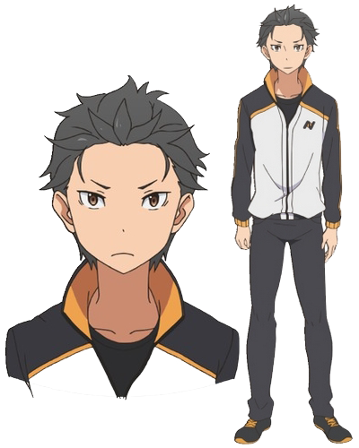
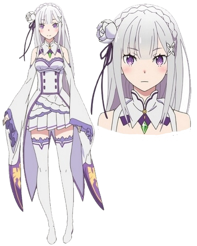
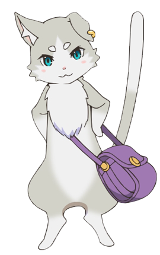
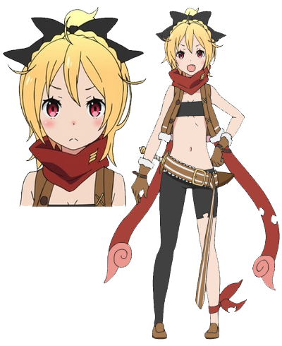
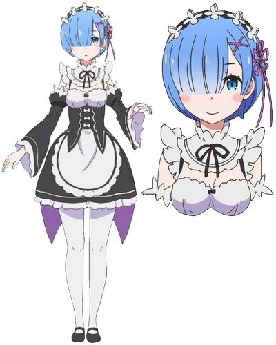
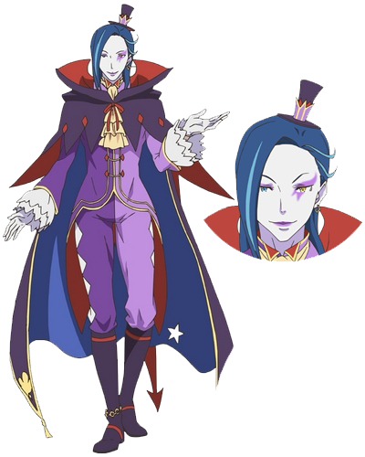
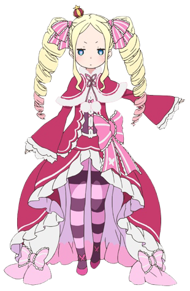
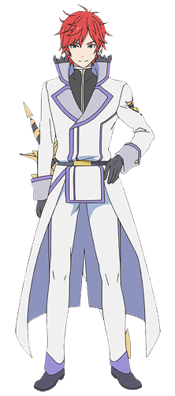
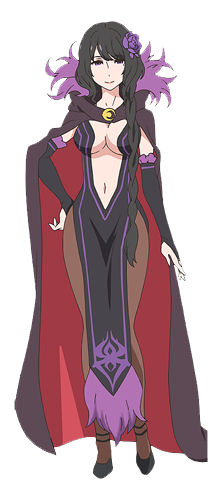

| When Subaru Natsuki leaves the convenience store, the last thing he expects is to be wrenched from his everyday life and dropped into a fantasy world. Things aren't looking good for the bewildered teenager, however: not long after his arrival, he is attacked by some thugs; armed with only a bag of groceries and a now useless cell phone, he is quickly beaten to a pulp. Fortunately, a mysterious beauty named Satella, in hot pursuit after the one who stole her insignia, happens upon Subaru and saves him. In order to thank the honest and kindhearted girl, Subaru offers to help in her search, and later that night, he even finds the whereabouts of that which she seeks. But unbeknownst to them, a much darker force stalks the pair from the shadows, and just minutes after locating the insignia, Subaru and Satella are brutally murdered. However, Subaru immediately reawakens to a familiar scene-confronted by the same group of thugs, meeting Satella all over again—the enigma deepens as history inexplicably repeats itself. |
|  |
Voiced by: Yuusuke Kobayashi . Natsuki Subaru
The main protagonist. One the way home from the convenience store he suddenly finds himself transported into another world. He has the ability that he calls "Return by Death" to go back in time when he dies. |
|
Voiced by: Rie Takahashi
Emilia
The main female protagonist. She is a silver haired and half elf girl who os one of the candidates to become the next ruler in the royal selection. Subaru first meets her when her insignia is stolen by Felt as she needs to possess it to be eligible to participate in the selection. She introduces herself as Satella when she and Subaru met during the first timeline before introducing herself by her real name when she got her insignia back. |  |
|  |
Voiced by: Yumi Uchiyama
Pack
Emilia's familiar in the form is a cat... |
|
Voiced by: Chinatsu Akasaki
Felt
A thief who grew up in a poor village. She steals Emilia' Insignia to sell to the highest bidder. |
 |

|
Voiced by: Inori Minase
Ram
An ogre and the twin sister of Rem. She lost her powers after her horn had be cut. She does the cleaning and laundry for the mansion. |
|
Voiced by: Rie Murakawa
Rem
An ogre and the twin sister of Rem. She lost her powers after her horn had be cut. She does the cleaning and laundry for the mansion. |
 |
|  |
Voiced by: Takehito Koyasu
Roswaal
A Mangrave as well as an Imperial Wizard and Count who is a benefactor and sponsor forf Emilia's bid for the throne. He is a highly influential individual who is also one of Lugminca's powerful mages. |
|
Voiced by: Satomi Arai
Beatrice
A mysterious mage who was hired by Roswald to keep his ancient magical tomes safe in his enormous library. She has a ability to warp any room inthe mansion to this library whenever she chooses. |
 |
|  |
Voiced by: Yuuichi Nakamura
Reinhard Van Astrea
An easy going royal knight who hold the litle of sword Sage / Sword Saint. |
|
Voiced by: Mamiko Noto
Elsa Granhilte
A bowel hunter who can sense fear in others. She is the first person to kill Subaru and trigger his time rewind ability. For reasons yet to be explained, she is after Emillia' Insignia. She attempts to buy it from Felt and Romuji but she ends up to killing them instead when negotiations fall during the first and second timelines. In the final timelines of the stolen insignia she is defeated by Reinhard and retreats vowing to come after Subaru again. |
 |